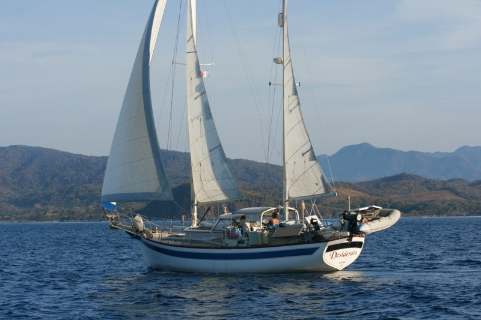
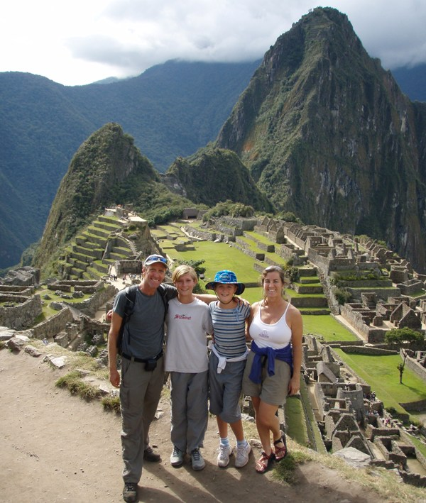

Growing Up On the Water
I’ve spent much of my life around the ocean and, for a few years during my childhood, sailing on it. When I was seven, my family—including my parents, sister, cat, and dog—decided to buy a sailboat and embark on a journey. We began in Ventura, CA, and gradually traveled down the coast of California, into Mexico, and through part of Central America over the span of two years. For the most part, we would anchor our boat offshore, whether it was by a secluded beach or a town. We eventually left the sailboat in El Salvador and moved to Lake Tahoe for the next two years, where we embraced mountain life and learned how to ski—a stark contrast to the tropical beaches that we had gotten used to.
My family’s boat “Desiderata” that we lived on for 5 years.
After our fun in the snow, we were eager to resume our travels, so we moved back onto the sailboat and spent another couple of years exploring the rest of Central America and parts of northern South America. Our final voyage took us to the Galapagos Islands before returning to Mexico. In total, we lived full-time on the boat for five years, experiencing the world from the unique perspective of life at sea.
Daily Life on the Boat
Many people assume that living on a sailboat is like being on a perpetual vacation. In truth, our lifestyle involved a great deal of hard work. We faced the same challenges as any family, but in the confined space of a 41-foot boat. My sister and I were home schooled—maybe we should call it ‘boat schooled’—and we had weekly chores, much like other kids. The difference was that after cleaning the bathrooms, we could step outside and dive straight into the water.

Standing on Machu Picchu - one of the many amazing places that we visited.
While living on a boat, many aspects of daily life were still possible, but they were often far less convenient than living in a house. For instance, a trip to buy groceries was no longer as simple as hopping in a car and heading to the Vons down the street. Typically anchored offshore from a town, we would first navigate our inflatable boat through the waves and onto the beach. From there, we’d catch a bus to the store, sometimes enduring a half-hour ride. Once we’d gathered all the groceries we needed (or as much as we could carry), we would begin the journey back to the boat. This routine often made grocery shopping an all-day expedition for us.
Travelling by sailboat has now become very popular. Every year, hundreds of boats leave from San Diego on their way to Mexico in an event called the “Baja Ha Ha”. It’s a great way for first-time sailors/travelers to meet others that are willing to give stepping out of the box a try. If you would like to learn more about my family’s adventures on the boat, you can visit our website that documents our travels.